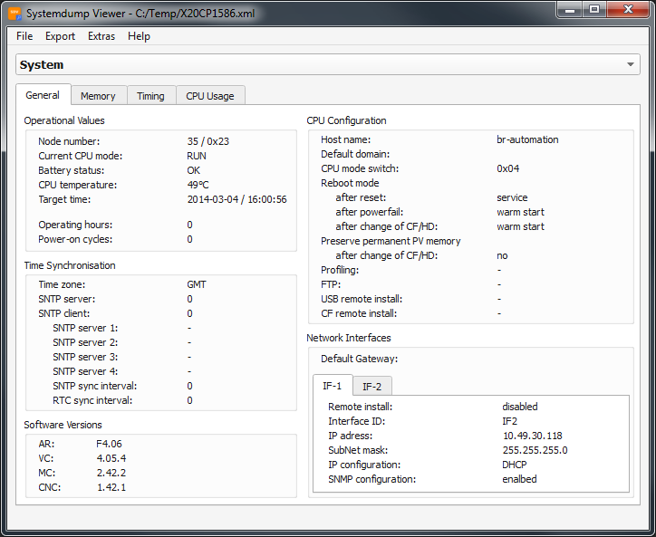
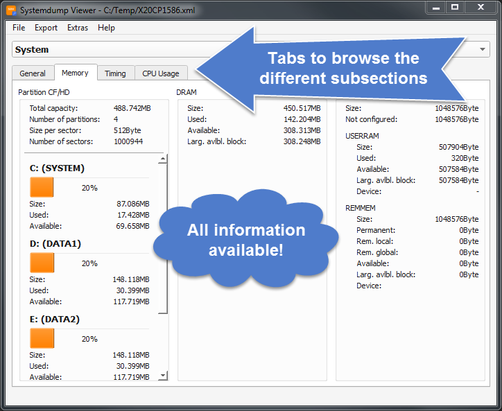
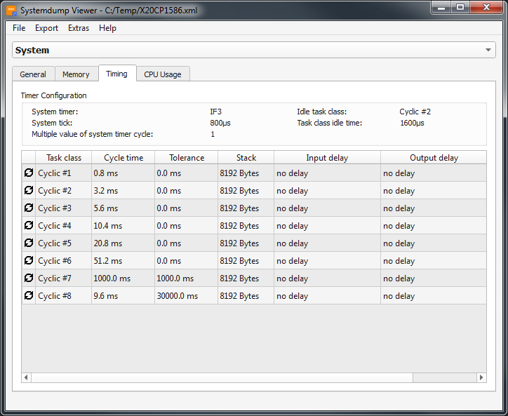
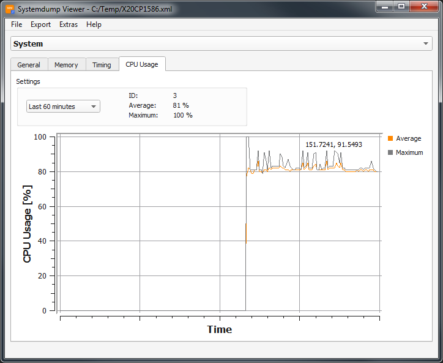

System




The information is viewed almost the same way as you can find it in the webbrowser, when looking through the SDM. You find all the detailed information like:
- general system informations
- the sizing and the usage of the CF partitions
- the configuration of the task classes
- the CPU usage drawn as a graph
arranged in the different tabs.
Further links: